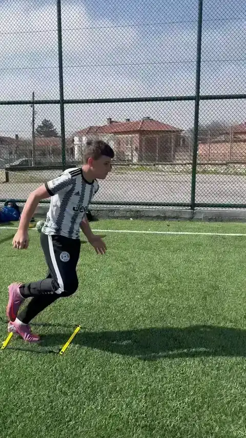
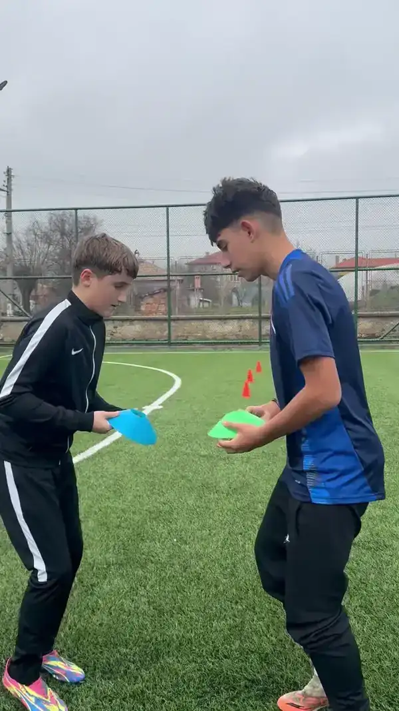
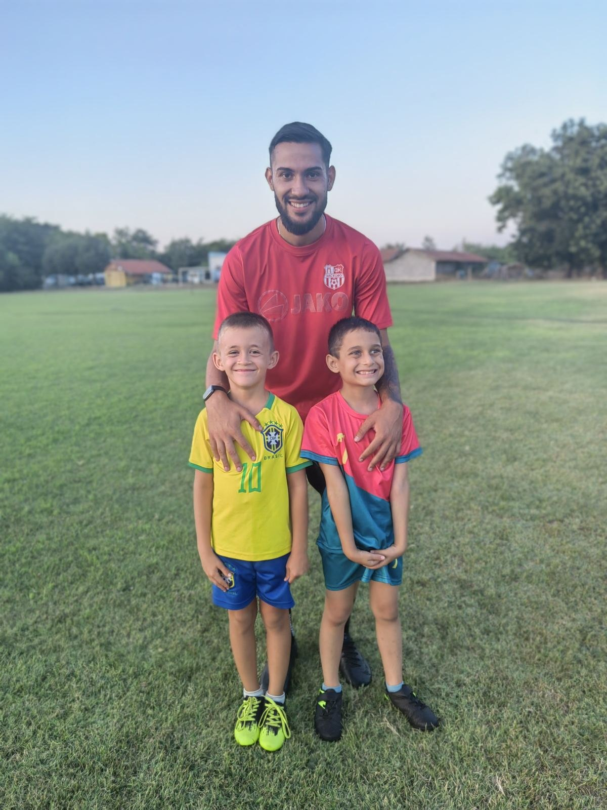

Зад Become Pro
Създадено от футболист. Изградено за футболисти.
Зад Become Pro стои Йордан Желев — треньор с опит като футболист и ясна цел: да помага на играчите да тренират по-структурирано и с конкретна посока.
Индивидуално футболно развитие с Йордан Желев
За амбициозни футболисти на 10–24 г., които искат да тренират с ясна цел и да пренасят наученото в мача.
Тренирай индивидуално с мен или избери готова онлайн програма според целите си.
Бивш футболист с дебют в Първа лига на 16 г. и опит в националния отбор на България U15.


Зад Become Pro
Зад Become Pro стои Йордан Желев — треньор с опит като футболист и ясна цел: да помага на играчите да тренират по-структурирано и с конкретна посока.
Готови онлайн програми
Всяка програма е създадена с конкретен фокус и ти показва какво да тренираш и как да го изпълняваш стъпка по стъпка.
Тренирай самостоятелно с готова програма или работи индивидуално с мен и получавай лична обратна връзка.
Избери как да започнеш
Избери готова програма за самостоятелна работа или индивидуална тренировка с лична обратна връзка.
Получаваш ясна структура и готов план, който можеш да следваш в удобно за теб време.
Разгледай програмитеТренировка, съобразена с твоето ниво, позиция и конкретните неща, които искаш да подобриш.
Запази тренировкаЗащо работи
Всяка тренировка следва ясен процес — от конкретна цел до приложение в реална игрова ситуация.

Работим върху конкретна тема и ясна цел.
Всяко упражнение има логично място в тренировката.
Наученото се пренася в реални игрови ситуации.
Следващата стъпка
Започни с готова онлайн програма или работи индивидуално с мен.